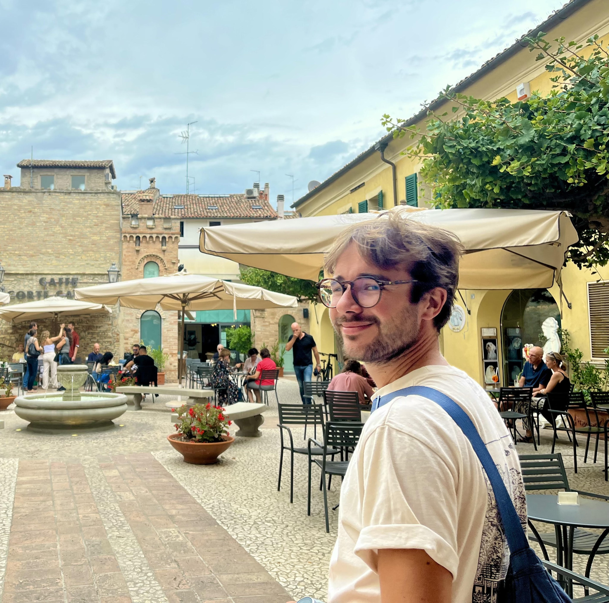

Arthur Laroche
PhD Candidate in Economics, University College London (UCL)
I am a final-year PhD candidate in the Department of Economics at UCL, supervised by Professors Imran Rasul and Jonas Hjort. I work in applied microeconomics and political economy, using randomised field experiments and causal inference to study how institutions shape economic behaviour, primarily in sub-Saharan Africa.
My research spans property taxation, digital payments, and land tenure, with fieldwork in the Democratic Republic of Congo and Uganda. I trained first in mathematics and statistics at Ecole des Ponts ParisTech, and hold an MSc from the Paris School of Economics.
I am on the 2026–2027 job market, looking for policy and industry roles.